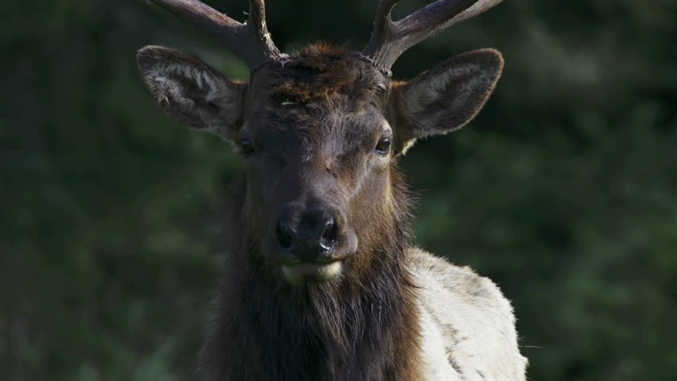
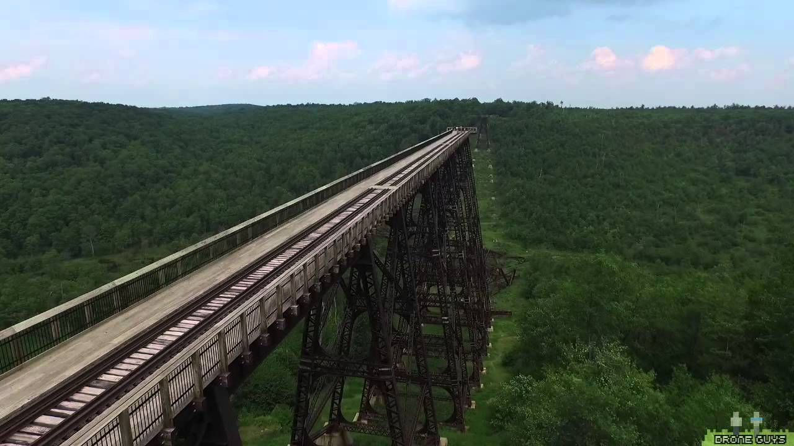
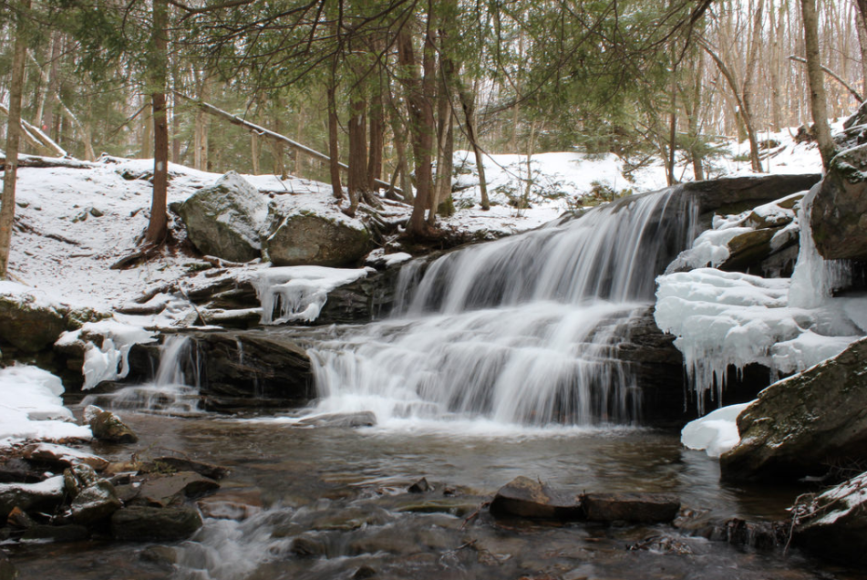
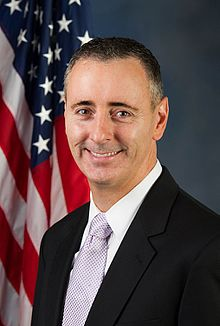

PA Wilds.
Leave No Trace. Just Take Action.
The Wilds: A State Treasure
In Pennsylvania, we are lucky to have a natural inheritance of
public land available for our responsible use and recreation known
as the PA Wilds. The land is expansive, encompassing 29 state parks,
300,000 acres of state gamelands, the Allegheny National Forest, and
90,000 acres of “wilderness,” as designated by the federal
government. Many residents of Pennsylvania and other states use the
wilds as an affordable way to spend time outdoors, using the 1,100
miles of hiking trails to get away from the commotion of busy city
streets. Gamelands provide a space for hunters, fishers, and
trappers to do these activities in a sustainable way, often helping
the environments there. Scenic overlooks and walkways provide a way
for families and friends to enjoy the natural beauty of land lightly
touched by human intervention. The wilds offer some of the best
stargazing in the state due to the low amounts of light pollution,
especially when compared to the cities on either end of PA.
With such abundant natural beauty, it is no wonder that an
astounding 97% of Pennsylvanians support dedication of state funds
for preserving our state’s natural spaces and historic sites. 90%
agreed that the support an increase in state funding for
these purposes (PA Land Trust). When people support the wilds, they
not only support the continued human enjoyment of the land, but also
a place where animals can thrive in their ecosystems that have only
seen minimal impact. One such ecosystem is the old growth forest,
which exists only in the Wilds territories of Pennsylvania. The
Pennsylvania elk herd calls this area home. Bald eagles use these
large trees in order to nest. These are not animals that will
stumble into your back yard like whitetail deer or raccoons. These
rarer species stick closer to the habitats that support them the
best. Having these habitats close to home means people can
responsibly use these environments and watch the animals in their
natural habitats, while without them, these animal populations would
surely suffer. Polls show that protecting the wilds is not a
partisan issue, but an issue for every resident of Pennsylvania.
A Couple Popular Attractions...
Kinzua Skywalk
Acres of Forests
Counties
State Parks
Miles of Waterways
Alleghany Forest
Feet of Elevation
Acres
Established
"Land of Many Uses"
Threats to the Wilds
Leave No (or at barely any) Trace
With any beautiful public land, there will always those who would rather reap the maximum possible financial benefit from it, rather than using it responsibly and protecting it. LaKeshia Knarr, an Outreach Specialist for the PA Wilds Center, describes conservation of the wilds as “the great balancing act that is a multiple-use working forest.” The PA Wilds are not protected by the federal government to the degree that the US National Parks are. For this reason, it is impossible to expect that all resource harvesting will cease. Fracking companies will come to harvest the natural gas from the Marcellus Shale gas deposit underneath the lands of the wilds. Logging companies will come to harvest the wood that will be used for lumber. But this does not mean that their impacts cannot be mitigated.
A common ethical code that many outdoors enthusiasts practice is called “Leave No Trace” or LNT. In short, this ethical system states that when a human is in a wild space, we must strive to make as little as possible, if any impact on the environment. This means not littering, putting out your campfires (if you must make them in the first place), and being a responsible guest to your wild hosts. By following these ethics, one can leave as little evidence of human impact on an area as possible. While it is important that all visitors to the wilds practice these ethics, they can also be applied to more than just the individual visitors to a wild place. In fact, through the continued efforts of voters and activists, many companies have had to embrace them.
For example, for fracking companies to obtain the natural gas that they want from the ground, they must drill several thousand meters underground, past the fresh water supply, and into the shale deposits where the natural gas sits. Before they can even start drilling, they must often make roads that lead to their sites so that their trucks can access these spots. Then, as they drill underground, using “fracking water” shot through concrete tubes to get to the gas. For years, no one outside the industry knew what was in the fracking water. They did not have to disclose what chemicals were being used.
Upon the initial discovery of the Marcellus Shale deposit, companies fracked with no recourse and without thought given to what might happen to the environment. Water supplies were tainted , habitats were destroyed (Scientific American), rules were broken, and as a result, wild spaces and drinking reservoirs (for both humans and animals) were severely harmed. But the companies started to get a lot of pushback from voters, and in turn, politicians. A Supply Chain Manager from Seneca Resources, a prominent energy company that fracks in Pennsylvania, said that “There’s a lot more incentive for companies to be clean and efficient these days… Not to mention that now, if we have some kind of environmental issue, it can cost us tens of thousands of dollars,” (interview). The fines that he is referring to come from Act 13 (LINK HERE), a PA law that concluded that irresponsible fracking lead to a breach in the PA Constitution’s guarantee to clean air and water for its residents. This act was a direct result of sustained political action and activism. With the right efforts, politicians will listen to the voters who elected (and more importantly, will re-elect them), and even large companies can be held at bay. Likewise, that mystery substance that they used to use as fracking water is now public knowledge and available at https://fracfocus.org/chemical-use/what-chemicals-are-used for public viewing. They are required by law to disclose these chemicals now so the people who are affected can always stay informed.
This principle of action is not only true with fracking, but also with logging and any other industries that look to use the wilds to harvest natural resources. Fracking companies are not perfect – no one is. If they are to be kept at bay, Pennsylvania citizens must not let down their guards. It is your concern that fuels the actions of the politicians and executives.
Take Action
Stewardship is Possible For All – It Has Happened Before
In the case of harvesting natural resources, less action is more. However, there are some cases where direct action is needed. The reinstatement of the Pennsylvania elk herd is one such example. Up until around the mid 1800’s, PA had a strong elk population. These large animals lived mostly in the northern parts of Pennsylvania, in areas that are now designated as the wilds. Elk county was even named for its prevalence of the animal. But due too deforestation and over-hunting, the elk population diminished. By the 1850’s, the once strong population had been relegated to only a few counties in the northern section of the state.
By the early 1900’s, elk became practically extinct in the state of Pennsylvania. However, in 1912, Joseph Kalbfus, the Executive Secretary of the PA Game Commission seized an opportunity to reinstate the population. Elk ran rampant in Yellowstone National Park and the Jackson Hole Refuge Area. Overpopulation of any animal can be as destructive for an ecosystem as underpopulation. The elk in the area took up too many the resources. Animals often died of starvation and disease as a result of the overpopulation. This unbalanced ecosystem affected every species of plant and animal in the areas. The PA Game Commission organized for some of the elk herd to be taken to Pennsylvania, where they could re-populate the former elk lands. The commission has been monitoring elk populations ever since, and they have seen an impressive resurgence.
The elk herd now numbers over a thousand (reference needed) with numbers focused in Elk and surrounding counties. The presence of the elk also helps quell the deer whitetail deer population. It is important to note that without human intervention, the elk would not have become extinct in our state in the first place. It is also important to recognize when we have caused damage to our ecosystems but still have the ability to reverse some of that damage. Stewardship is not impossible. In fact, with the right care and resources, improvements have been, and can continue to be made. The PA Game Commission also continues to do great work, aiming to re-populate the state with more native species, such as upland birds. In order for them, and organizations like them, to make these positive strides, resources are needed. Hunters can help by buying licenses, following state and local hunting laws, and always reporting their harvests to the game commission so that they can keep tabs on animal populations.
Visit!
One of the easiest and most enjoyable ways to support the wilds is to visit! When you go to visit the wilds, you are doing more than just enjoying nature (although for many, that is enough motivation!). You are helping boost the local economy. Purchasing passes to camp, as well as shopping at local stores help the people who work in the area, and help the wilds gain the money that can go back into conservation. Of course, the wilds provide a great place to camp, hunt, or enjoy nature, but there are also opportunities for those who do not particularly enjoy the being outside for so long.. Events throughout the year (add hyperlink in web page) provide opportunities to shop for handmade goods, buy local produce, and enjoy holiday-themed fun for the whole family. Each event provides an opportunity to help small businesses who have a smaller environmental impact on the area than larger corporations (LaKeshia Knarr).
Don’t wait for someone else. It’s on you to be the good steward
There will always be those who abuse wild spaces. There will always be people who throw empty beer cans into the woods when they camp, let their shopping-bag-trash-cans blow away, or hunt over their legal bag limits. This is why it is all the more important for those who truly care for the wilds to be stewards. The first step is to connect – or reconnect – with the outdoors. A trip out to the beauty that the wilds offer is often all the motivation a person needs to act to protect it. Beyond that, there are opportunities provided by the PA Department of Conservation and Natural Resources for people to come and clean up the landscape. It is not right to have to clean up someone else’s mess, but it is a small price to pay to maintain our state’s natural beauty.
As a Pennsylvanian, it is your civic duty to vote. As a steward of the wilds, it is your duty to vote for those who, like you, will protect them. Politicians listen to their voters so they can get into office and get re-elected. We hold them accountable with our votes. If they know that their constituents care deeply for the environment, they will vote in favor of protecting it. It has happened before in the case of limiting and regulating fracking, and it can happen again with our continued efforts. You can always look for your potential public officials’ voting records manually, checking how they voted for each law and referendum. However, the internet has made it much easier. There are now plenty of online resources like this one (http://scorecard.lcv.org/members-of-congress) that show you. Or simply scroll down to see a few of the environmental standouts from our great state. And if you have the means, consider donating to conservation agencies that put in the leg work to keep the PA Wilds what they were always meant to be – wild.
| Official | District | Canidate | Why Them? |
|---|---|---|---|
| Gov. Tom Wolf | PA | Endorsement from Conservation Voters PA | |
| Rep. Brian Fitzpatrick | PA-08 |  | High environmental voting record, LCV scorecard |
| Rep. Mike Doyle | PA-14 | High environmental voting record, LCV scorecard |